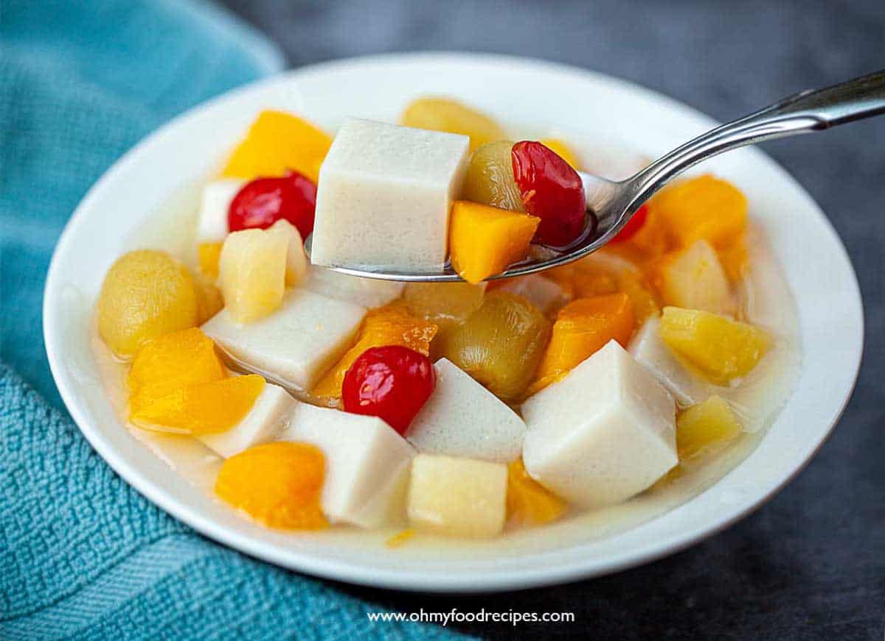

Peking roasted duck
Ingredients
- 1 (4 pound) whole duck, dressed
- ½ teaspoon ground cinnamon
- ½ teaspoon ground ginger
- ¼ teaspoon ground nutmeg
- ¼ teaspoon ground white pepper
- ⅛ teaspoon ground cloves
- 3 tablespoons soy sauce, divided
- 1 tablespoon honey
- 5 green onions, divided
- ½ cup plum jam
- ¼ cup finely chopped chutney
- 1 ½ teaspoons sugar
- 1 ½ teaspoons distilled white vinegar
- 1 tablespoon chopped fresh parsley, for garnish
How to cook
- Rinse duck inside and out; pat dry. Cut off tail and discard.
- Mix together cinnamon, ginger, nutmeg, white pepper, and cloves in a small bowl. Sprinkle 1 teaspoon spice mixture into cavity of duck. Stir 1 tablespoon soy sauce into remaining spice mixture and rub evenly over entire outside of duck. Cut 1 green onion in half and tuck it inside cavity. Cover and refrigerate duck for at least 2 hours or up to overnight.
- Place duck breast-side up on a rack set in a wok or pot. Steam for 1 hour, adding more water as it evaporates. Lift duck with two large spoons to drain juices and green onion. Place duck breast-side up in a roasting pan and prick skin all over with a fork.
- Preheat the oven to 375 degrees F (190 degrees C).
- Roast duck in the preheated oven for 30 minutes.
- Mix together remaining 2 tablespoons soy sauce and honey in a small bowl. Brush honey mixture onto duck.
- Increase the oven temperature to 500 degrees F (260 degrees C). Roast until skin is richly browned, about 5 minutes. Do not allow skin to char.
- Mix together plum jam, chutney, sugar, and vinegar in a small serving bowl. Chop remaining green onions and place them into a separate bowl.
- Place whole duck onto a serving platter and garnish with orange slices and fresh parsley. Serve with plum sauce and chopped green onions.
Kung Pao chicken

Ingredients
Chicken:
- 28 ounces (800g) boneless/skinless chicken breast cut into 1 inch cubes
- 1 tablespoon shaoxing wine or dry sherry
- 1 tablespoon light soy sauce
- 2 teaspoons baking soda
- 1 teaspoon cornstarch / corn flour
Sauce:
- 1/2 cup low-sodium chicken stock (or broth) -- water can be used
- 5 tablespoons light soy sauce
- 2 tablespoons Chinese black vinegar (or substitute good-quality balsamic vinegar)
- 2 tablespoon Chinese Shaoxing wine (or dry sherry)
- 2 teaspoon dark soy sauce
- 2 teaspoons hoisin sauce
- 2 tablespoons sugar*
- 1 teaspoon cornstarch / corn flour
Stir Fry:
- 4 tablespoons cooking oil divided
- 1 1/2 tablespoons garlic (4-6 cloves)
- 1 tablespoon ginger
- 1/2 red bell pepper (capsicum) seeded and diced
- 1/2 green bell pepper (capsicum) seeded and diced
- 8-10 dried chilies cut into ½-inch pieces (adjust to taste)
- 1 tablespoon Sichuan peppercorns, lightly toasted and ground**
- 4 green onion / scallion stems cut into 1-inch pieces
- 1/2 cup roasted/unsalted peanuts
- 2 teaspoons sesame oil optional
How to Cook
- Combine all ingredients for the chicken in a shallow bowl; cover and marinate for 10 minutes (if time allows).
- Whisk sauce ingredients together until sugar dissolves; set aside.
- Heat a large skillet, pan or wok over high heat. Add 2 tablespoons of cooking oil, allow to heat up, then add marinated chicken. Fry chicken for 3-4 minutes while occasionally stirring, until edges are browned. Remove from heat and set aside.
- Add remaining cooking oil into the same pan/wok. Stir in garlic, ginger, chili diced peppers (capsicums) and Sichuan peppercorns and stir fry for 1 minute.
- Give the prepared sauce a mix, then pour it into the pan and bring it to a boil while stirring.
- Once it begins to thicken slightly, add chicken back into the pan/wok and mix all of the ingredients through the sauce until the chicken is evenly coated and sauce has thickened, (about 2 minutes).
- Stir in green onions, peanuts and sesame oil. Toss well and continue to cook for a further 2 minutes to infuse all of the flavours together.
- Serve immediately with steamed/cooked rice or fried rice!
Sweet and Sour Pork

Ingredients
- 1 pork fillet (about 500g), trimmed and cut into 3cm chunks
- sunflower or vegetable oil, for deep-frying
- cooked rice or noodles, to serve
For the marinade
- 1 tbsp light soy sauce
- 2 tbsp shoaxing rice wine or dry sherry
- 1 garlic clove, grated
- thumb-sized piece ginger, grated
For the coating
- 50g cornflour
- ½ tsp salt
- 1 tsp ground white pepper
- 2 tsp celery salt
- 2 tsp caster sugar
For the sauce
- 1 tbsp sunflower oil
- 2 garlic cloves, finely chopped
- thumb-sized piece ginger, chopped
- 1 green or red pepper, roughly chopped
- 2 tbsp tomato ketchup
- 4 tbsp rice vinegar
- 1 tsp sesame oil
- 2 tbsp light soy sauce
- 1 tbsp soft brown sugar
- 300g can pineapple chunks
- 1 tbsp sesame seeds
For the batter
- 100g rice flour
- 100g cornflour
- 1 tsp baking powder
How to cook
- Mix the pork with the marinade ingredients and leave to sit for at least 15 mins, or chill for a few hours.
- In a separate bowl, mix all the coating ingredients. Drain any excess liquid off the pork and toss the pork in the seasoned coating.
- To make the sauce, heat the oil in a shallow saucepan and gently fry the garlic, ginger and peppers until just starting to soften.
- Now drop in all the rest of the ingredients except the sesame seeds. Bring everything to the boil and cook for a few mins until thickened, then take off the heat.
- To make the batter, whisk the flours and baking powder together with 200ml water to a smooth paste.
- Heat the oil in a deep-fat fryer, large saucepan or a wok to 180C or until a drop of batter sizzles and browns in 20 secs.
- Dip the marinated pork in the batter mix (do it in two or three batches) and let any excess drip off. Fry the pork in batches for about 5-6 mins or until
golden. Remove and drain on kitchen paper until all the batches are done. Make sure you bring the oil back to the correct temperature between each batch.
- Coat the crispy pork in the sauce, then sprinkle over the sesame seeds, coriander and serve with rice or noodles.
Mapo Tofu

Ingredients
- 2 tablespoons Sichuan peppercorns, divided (see notes)
- 1/4 cup vegetable oil
- 1 teaspoon cornstarch
- 2 teaspoons cold water
- 1 1/2 pounds medium to firm silken tofu, cut into 1/2-inch cubes
- 1/4 pound ground beef
- 3 garlic cloves grated on a microplane grater
- 1 tablespoon fresh ginger grated on a microplane grater
- 2 tablespoons fermented chili bean paste (see notes)
- 2 tablespoons Xiaoxing wine
- 1 tablespoon dark soy sauce
- 1/4 cup low sodium chicken stock
- 1/4 cup roasted chili oil (see notes)
- 1/4 cup finely sliced scallion greens
How to Cook
- Heat half of Sichuan peppercorns in a large wok over high heat until lightly smoking. Transfer to a mortar and pestle. Pound until finely ground and set aside.
- Add remaining Sichuan peppercorns and vegetable oil to wok. Heat over medium high heat until lightly sizzling, about 1 1/2 minutes. Pick up peppercorns with a wire mesh skimmer and discard, leaving oil in pan.
- Combine corn starch and cold water in a small bowl and mix with a fork until homogenous. Bring a medium saucepan of water to a boil over high heat and add tofu. Cook for 1 minute. Drain in a colander, being careful not to break up the tofu.
- Heat oil in wok over high heat until smoking. Add beef and cook, stirring constantly for 1 minute. Add garlic and ginger and cook until fragrant, about 15 seconds. Add chili-bean paste, wine, soy sauce, and chicken stock and bring to a boil. Pour in corn starch mixture and cook for 30 seconds until thickened.
- Add tofu and carefully fold in, being careful not to break it up too much. Stir in chili oil and half of scallions and simmer for 30 seconds longer. Transfer immediately to a serving bowl and sprinkle with remaining scallions and toasted ground Sichuan pepper. Serve immediately with white rice.
Char Siu
Ingredients
- ½ cup soy sauce
- ⅓ cup honey
- ⅓ cup ketchup
- ⅓ cup brown sugar
- ¼ cup Chinese rice wine
- 2 tablespoons hoisin sauce
- 2 tablespoons red bean curd (Optional)
- 1 teaspoon Chinese five-spice powder (Optional)
- 2 (1 pound) pork tenderloins
How to cook
- Stir soy sauce, honey, ketchup, brown sugar, rice wine, hoisin sauce, red bean curd, and five-spice powder together in a saucepan over medium-low heat. Cook and stir until just combined and slightly warm, 2 to 3 minutes.
- Meanwhile, slice each pork tenderloin lengthwise into 1 1/2- to 2-inch-thick strips. Place pork strips in a large, resealable plastic bag.
- Pour marinade into the bag with the pork. Squeeze air from the bag, seal, and turn the bag a few times until pork is well coated. Marinate in the refrigerator, 2 hours to overnight.
- When ready to cook, preheat a charcoal grill for medium-high heat and lightly oil the grate.
- Remove pork from marinade and shake to remove excess liquid. Set aside the remaining marinade for basting.
- Rake the hot coals into two equal piles on opposite sides of the charcoal grate. Add a small container of water to the grate. Place pork strips in the center of the grate for indirect cooking.
- Cook pork over indirect heat, turning regularly and basting as desired, until an instant-read thermometer inserted into the center reads at least 145 degrees F (63 degrees C), 30 minutes or longer. Serve hot!
Chinese Traditional Desserts
Almond Jelly

Ingredients
- 1 cup water
- 2 (.25 ounce) envelopes unflavored gelatin powder
- 1 cup water
- 2 cups milk
- ¾ cup sugar
- 1 ½ teaspoons almond extract
How to make
- Pour 1 cup water in a bowl; sprinkle the gelatin over the water; stir until the gelatin is partially dissolved. Set aside.
- Bring 1 cup water to a boil in a large saucepan. Reduce heat to medium-low and slowly pour in the gelatin mixture.
- Add the milk, sugar, and almond extract; stir until the sugar and gelatin are completely dissolved; pour mixture into a large, shallow container.
- Refrigerate until firm, 3 to 4 hours. Cut into small squares to serve.
Egg Tart
Ingredients
Oil dough
- 200 g plain flour
- 325 g butter
Water dough
- 250 g plain flour
- 1 eggs
- 1/2 teaspoon of salt
- 100 g of ice water
Filling:
- 5 eggs
- 80 ml milk
- 165 ml of water
- 80 g caster sugar
- Egg tart molds
How to make
- Put the plain flour, egg, and ice water in the electric food processor.
- Mix them until they combine and form a ball.
- Cut the chilled butter into small pieces.
- Put the butter and flour in an electric food processor. Use the pulse function to mix them until it forms bridges and strands.
- Spread a large piece of cling film on the tabletop, sprinkle with some plain flour.
- Flatten the water dough and place another piece of cling film on top.
- Roll the water dough to form a large square.
- Remove the cling film on top of the water dough, place the oil dough in the center and fold the sides of the water dough over the oil dough. Make sure the oil dough is fully covered by the water dough. Flatten it with a rolling pin. (Analogy: Now the dough looks like a sandwich, with the oil dough mirrors the filling of the sandwich, and the water dough mirrors the bread.)
- Wrap it in cling film and leave it in the chiller for twenty minutes or until it hardens.
- Remove it from the chiller Flatten it with a rolling pin to about 3cm thick. Fold both ends of the dough toward the center like closing a book. (Analogy: Now it resembles a multilayered sandwich.) Place it into the chiller again for 20 minutes.
- Repeat the folding process (step 6) three more times.
- After the last repetition, flatten the dough to about 3mm thickness. Use a cookie cutter or bowl to cut out pieces of round pastry that are slightly larger than the area of the mold.
- Put the cut pastry into a mold. Lightly press the pastry onto the surface of the mold.
- Trim the sides with a fork or a blunt knife.
- Melt the sugar with water to make a simple syrup. Let it cool.
- Beat the eggs for a minute.
- Add the milk and syrup to the egg. Mixed well.
- Filter the milk liquid twice to remove impurities.
v
- Fill each empty pastry shell up to 70%.
- Bake it at 200 degrees C/ 390 degrees F for 15 minutes, then reduce to 180 degrees C / 356 degrees F for another 10 minutes. Leave the oven door ajar for five minutes then remove the egg tarts.
Soy Milk Pudding
Ingredients
- 1 L Packet soya bean drink
- 3 cups (750 ml) Water
- 150 ml (less than 3/4 cup) Evaporated milk
- 1 tin (535 g) Canned longans
- 1 packet (10 g/ 1 tbsp) Agar-agar powder
- 3 pandan leaves, bruised and knotted
How to make
- Rinse pandan leaves and tie pandan leaves into a knot. To extract the most fragrance out of it, tear the leaves a little. Pour longan syrup into a bowl, and pour out 150 ml of evaporated milk into a measuring cup.
- Add 3 cups of water and pandan leaves into a pot. Cover with lid and bring to a boil (10 minutes). Remove pandan leaves.
- Pour about 900 ml of soy milk into the pot. Mix agar agar with the remaining soy milk. Mix well and pour into the pot.
- Bring to boil (without lid or it may spill over), whisk occasionally, then turn off the heat (10 min).
- Pour in evaporated milk and longan syrup. Mix well.
- With a ladle, pour soy mixture into plastic containers. You could also transfer it into a jug. For a smooth surface, skim off bubbles from the top. Leave it to set (2 hours).
- When pudding is set, gently place three longans on each of them.
- Chill in fridge before serving.